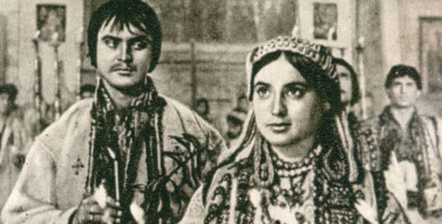

Михайло Коцюбинський — Тіні забутих предків (аналіз, паспорт твору)
- Літературний рід: епос.
- Жанр: соціально-побутова повість з елементами філософської.
- Напрям: модернізм.
- Течія: імпресіонізм із символічно-міфологічним елементом.
Тема: зображення життя гуцулів на межі ХІХ-ХХ ст.; відтворення поетичного світу давніх гуцульських традицій, міфологічного світосприйняття і світовідчуття гуцулів; сильних і нестримних почуттів; органічної єдності з природою.
Ідея: гімн природі, чистоті людських взаємин і почуттів; засудження бездуховного життя, обмеженого дрібними потребами й інтересами.
Композиція (сюжет): (експозиція) зображення карпатської природи — збирання гуцульських родин на Храмове свято до церкви — бійка між родинами Гутенюків і Палійчуків на ґрунті давньої, незапам'ятної неприязні — (зав'язка) знайомство малих Івана й Марічки — зустрічі малих Івана та Марічки, які пасуть скотину — малий Іван вирізає флояру й підслуховує мелодію Чугайстира — зародження кохання й стосунків юних Івана та Марічки — Іван прощається з Марічкою перед тим, як іти на кілька місяців на пасовище — перебування Івана на полонині — повернення Івана, який довідується, що Марічка втопилася — пошуки Іваном Марічки, зникнення його на 6 років — повернення Івана та його одруження на нелюбій Палагні — господарювання Івана й Палагни, "гуляння" Палагни в корчмі — Палагна проводить таємний обряд перед Великоднем і перша її зустріч із мольфаром — Палагна спостерігає битву Юра з грозовою хмарою — Палагна стає любаскою моль-фара й нехтує Іваном — бійка Івана з мольфаром — Іван іде в гори, де його починає зводити нявка, яка набула вигляду Марічки — Чугайстир наздоганяє нявку — Іван грає на флоярі, щоб примусити танцювати Чугайстира й тим урятувати нявку — (кульмінація) нявка повертається й заводить Івана до прірви — понівечений Іван помирає — (розв'язка) похорони Івана: сумна частина + веселощі.
Головні герої: Марічка Гутенюк та її родина; Іван Палійчук та його родина; Палатна — дружина Івана Палійчука; Юра, сусід Палійчуків, мольфар; щезник, нявка, чугайстир.
Образи: людей: родина Гутенюків (батько, мати, Марічка); родина Палійчуків (батько, мати, Іван); Юра — мольфар (чарівник); Палагна — багата гуцулка; баба Хима; люди; міфологічних істот: Чугайстир — добрий лісовий дух, що боронить людей від нявок; Нявка — лісова мавка, загублена дівоча душа, з діркою замість спини, що обертається на дівчину й зводить чоловіків; щезник — лісовий дух; арідник — злий дух; природи: Карпатські гори; річка Черемош; Бескиди; хмарки; гроза; полонина, предковічний ліс; тварини; предметів і явищ: флояра (сопілка); трембіта; бартка (гуцульська сокирка); коломийки; похорон; голос сокири.
Символічні образи: майже кожен із названих вище.
Художні засоби виразності: увесь арсенал, адже твір є зразком імпресіоністичного письма.
Проблематика:
- гармонії людини і природи;
- життя і смерті;
- вічності й сили кохання;
- протиборства добра і зла;
- сенсу життя і щастя людини;
- вірності й зради;
- вірності кохання і деспотизму антигуманних звичаїв;
- ролі праці в житті людей;
- стосунків батьків та дітей;
- язичництва і християнства.
Примітки та корисна інформація: Поетика твору розвивається у двох напрямках. З одного боку, автор використовує традиційний сюжет, з другого — вдається до складніших форм художньої умовності. Особливість твору полягає в підході до зображуваного, у способах сприйняття і передачі образів навколишнього світу. І тут автор виступає як імпресіоніст.
У творі письменник зображує ніби два світи — зовнішній і внутрішній. Причому часто зовнішній світ не деталізується, а передається точними влучними штрихами. Описи, яких у повісті немало, подаються ніби й реалістично, але в них більше уваги приділяється враженню героя, ніж просто реальному пейзажу. Захоплення внутрішнім світом героя починає сприйматися читачем як реальний світ. У цьому полягає імпресіоністична структурність повісті — відмова від традиційного сюжету, зосередження оповіді на внутрішньому конфлікті. Враження від навколишнього світу, матеріалізовані у почутті, настрої, переживаннях, становлять організуючий центр повісті Коцюбинського як твору імпресіоністичного. Імпресіонізм Коцюбинського слід розуміти як особливий стиль, близький до реалістичного напряму розвитку літератури. Письменник виробляє і свої специфічні засоби зображення. Йдеться про імпресіоністичний пейзаж у повісті "Тіні забутих предків". Напівтони, надзвичайність функції світлотіні — ось що відзначає пейзаж М. Коцюбинського-імпресіоніста.
Повість Михайла Коцюбинського написана під враженням його перебування на Гуцульщині. В основу повісті ліг мандрівний сюжет про закоханих з ворожих родин, подібний до фабули трагедії Шекспіра "Ромео і Джульетта". У творі розповідається про кохання Івана й Марічки, українських Ромео і Джульетта. Яскраво передано побут і життя гуцулів.
Повість "Тіні забутих предків" має багато спільного з написаною в той же час "Лісовою піснею" Лесі Українки. Зокрема, є подібні риси в образах Івана й Лукаша, Марічки й Мавки. Ідея повісті — гімн природі, чистоті людських взаємин і почуттів; засудження бездуховного життя, обмеженого дрібними потребами й інтересами. За повістю М. Коцюбинського "Тіні забутих предків" кінорежисер Сергій Параджанов разом з Іваном Миколайчуком створили чудовий фільм, який приніс всесвітню славу українському кіномистецтву.